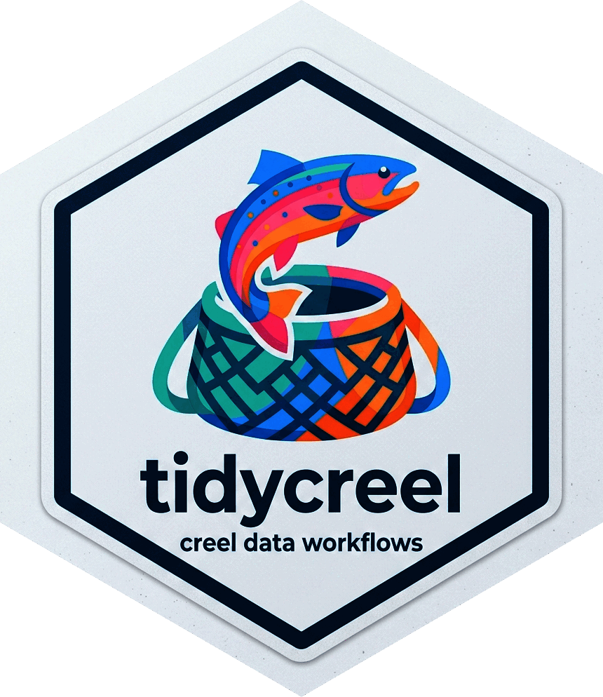

Save a creel design as a bundle that rebuilds it
Source:R/design-bundle.R
write_design.RdWrites the steps that built design – creel_design(),
add_sections(), add_counts(), add_interviews() with the arguments
they were given – and the table each step was given, to a folder (or a
.zip file). read_design() runs the steps again with the installed
version of tidycreel, so the rebuilt design gets every fix made since the
bundle was written. Unlike saveRDS(), the bundle can be read outside R:
a YAML manifest and one CSV per table.
Arguments
- design
A
creel_design()object.- path
A folder to create, or a file name ending in
.zip(needs the zip package).- include_data
TRUE(default) writes every table.FALSEwrites the design only (the calendar and sections) and the arguments of the other steps, e.g. to share a survey plan or when interviews hold personal data; supply those tables toread_design().- notes
Optional named list written to the manifest as notes, e.g. how the schedule was drawn. Notes are never used to rebuild the design.
- overwrite
Replace an existing bundle at
path.
Details
The bundle must rebuild the design exactly, so write_design() first
rebuilds it from its steps and compares the result with design:
A design changed by hand after it was built (for example
design$calendar$day_type[3] <- "weekend") is refused, because the edit is in no step and would be lost. Make the change in the input table and build the design again.A design built by a version of tidycreel without steps is refused; build it again with this version.
Not yet supported, and refused rather than written in part: bus-route and ice designs.
Each table is written with a checksum and its column types (dates,
date-times with their time zone, factor levels), and is read back and
compared before write_design() returns.
Examples
data(example_calendar)
data(example_counts)
d <- creel_design(example_calendar, date = date, strata = day_type)
d <- add_counts(d, example_counts, count_col = effort_hours)
#> Warning: No weights or probabilities supplied, assuming equal probability
path <- file.path(tempdir(), "example-design")
write_design(d, path, overwrite = TRUE)
d2 <- read_design(path)
#> Warning: No weights or probabilities supplied, assuming equal probability
unlink(path, recursive = TRUE)